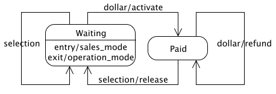

The vending machine statemachine had some problems. Adding some actions will solve many of them. Here’s the same statemachine with actions.

The Vending Machine Statemachine Diagram, Version 2
You can see I’ve added three transition actions (the Mealy type). Check out the transition from Waiting to Paid. When this transition is triggered the activate action will be called which will activate the hardware that dispenses goodies. Also, when a selection is made, transitioning from Paid to Waiting, the release action will cause the hardware to release the selected product. Finally, this version of the vending machine won’t steal your money any more. When an extra dollar is inserted, the refund event is invoked and the dollar is refunded.
Notice that the Waiting state has an entry action (Moore type) and an exit action. When ever the Waiting states is entered, the sales_mode action is invoked. The intent of this action is to make the vending machine blink or flash or scroll text; whatever it takes to attract customers. When the Waiting state is exited, the vending will go into operation_mode where all the blinking stops so the customer do business.
Implementation:
Here’s how the new vending machine can be implemented in Ruby:
vending_machine = Statemachine.build do
state :waiting do
event :dollar, :paid, :activate
event :selection, :waiting
on_entry :sales_mode
on_exit :operation_mode
end
trans :paid, :selection, :waiting, :release
trans :paid, :dollar, :paid, :refund
context VendingMachineContext.new
end
There are several new tricks to learn here. First is the state method. This is the formal syntax for declaring a state. The informal syntax is the trans method which we’ve already seen. The state method requires the state id and an option block. Every method invoked within the block is applied to the state being declared.
With a state block you may declare events, entry actions, and exit actions. The event method is used to declare transition out of the current state. Its parameters are the event, destination state, and an optional action. The on_entry and on_exit methods are straight forward. They take one parameter: an action. (See below for more on action syntax)
After the waiting state declaration we see the familiar calls to trans. The trans method takes an option 4th action parameter. You can see that the release and refund actions were added this way. Context:
The final line sets the context of the statemachine. This is an interesting aspect. Every statemachine may have a context and if your statemachine has actions, you should definitely give it a context. Every action of a statemachine will be executed within its context object. We’ll discuss this more later.
Here is a simple context for the vending machine statemachine.
class VendingMachineContext
def activate
puts "activating"
end
def release(product)
puts "releasing product: #{product}"
end
def refund
puts "refuding dollar"
end
def sales_mode
puts "going into sales mode"
end
def operation_mode
puts "going into operation mode"
end
end
With the statemachine gem, actions can be declared in any of three forms: Symbol, String, or Block.
When the action is a Symbol, (on_entry :sales_mode) it is assumes that there is a method by the same name on the context class. This method will be invoked. Any parameters in with the event will be passed along to the invoked method.
String actions should contains ruby code (on_entry “puts ‘entering sales mode’”). The string will use invoked with in the context object using instance_eval. Strings allow quick and dirty actions without the overhead of defining methods on your context class. The disadvantage of String actions is that they cannot accept parameters.
If the action is a Proc (on_entry Proc.new {puts ‘entering sales mode’}), it will be called within the context of the context. Proc actions are also nice for quick and dirty actions. They can accept parameters and are preferred to String actions, unless you want to marshal your statemachine. Using one Proc actions will prevent the entire statemachine from being marhsal-able.
For kicks let’s put this statemachine thought a few events.
vending_machine.dollar vending_machine.dollar vending_machine.selection "Peanuts"
Here’s the output:
going into operation mode activating refuding dollar releasing product: Peanuts going into sales mode
That sums it up for actions. In Example 3, we’ll talk about how do deal with conditional logic in your statemachine.